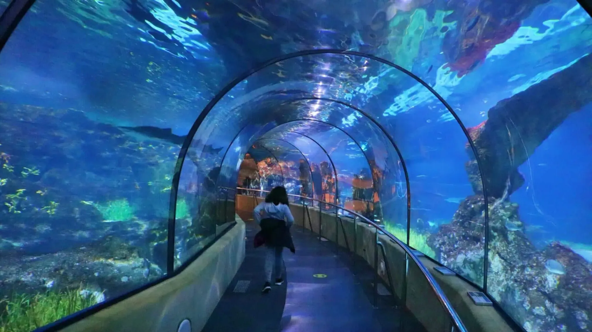

EXHIBICIÓN

Oceanarium
El Oceanarium es el espacio principal del acuario. Su túnel transparente permite observar a los animales desde una perspectiva cercana, como si caminaras por el fondo del mar.
Acuarios mediterráneos y tropicales
Durante la visita se pueden ver diferentes ecosistemas marinos, desde ambientes mediterráneos hasta zonas tropicales con peces de colores y especies adaptadas a aguas cálidas.
Actividades educativas
El recorrido incluye espacios pensados para aprender sobre la conservación de los océanos, la biodiversidad marina y la importancia de cuidar los ecosistemas acuáticos.